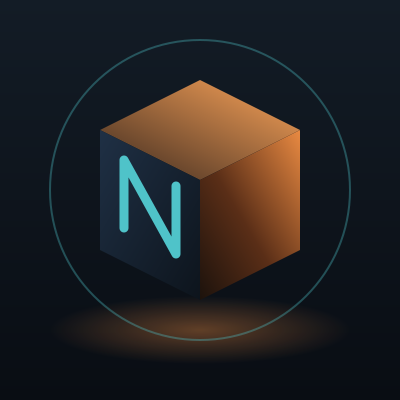

03 / обо мне
Привет,
я Дмитрий
Студент 4 курса прикладной математики и информатики. Пишу бэкенд на Java и Spring: API, базы данных, очереди сообщений. В сети меня можно найти как Nour или Nournicat.
- 4 курс ПМИ
- 5 пет-проектов
- 13 технологий в стеке
- 0 строк JavaScript на этом сайте
Хороший бэкенд — тот, о котором никто не вспоминает. Он просто работает.
— принцип, которого стараюсь держаться
Что умею
-
API
Пишу REST API на Spring Boot: валидация, единая обработка ошибок, документация в Swagger.
-
Данные
Проектирую схемы в PostgreSQL, веду миграции через Flyway, работаю с JPA и слежу за лишними запросами.
-
Надёжность
Покрываю код тестами на JUnit и Testcontainers, упаковываю сервисы в Docker Compose.
сейчас изучаю KubernetesgRPCOpenTelemetrySystem Design
